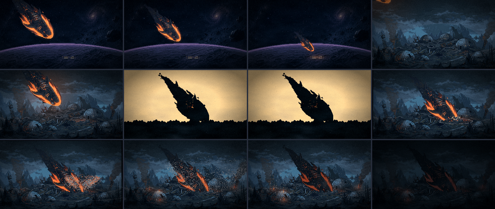
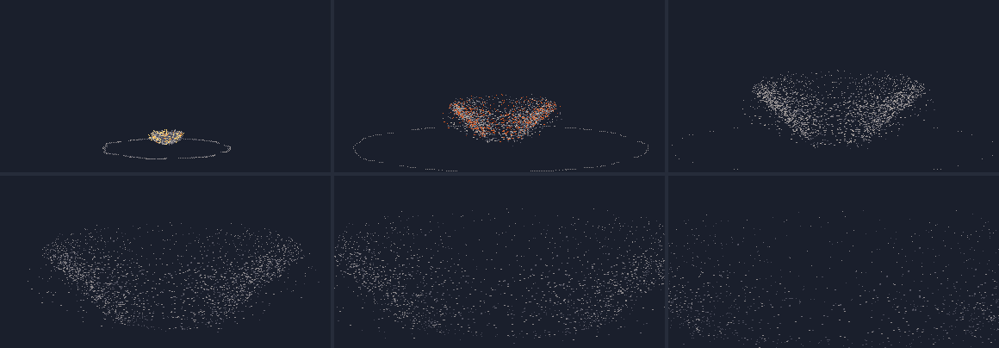
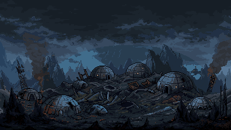
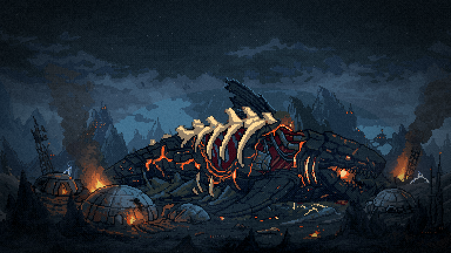
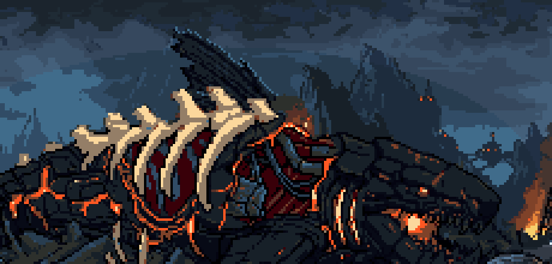

Leviatã novo · rodada 4
Bloco D · 18/10/2026. ← rodada 3 · A reentrada sem a mancha: aprovada.
Capítulo 5 · a queda refeita no jogo, para você avaliar
A cena como eu recomendei: o corte para o plano baixo, os quadros de impacto, a cortina de ejeção do vácuo e o corpo que fica cravado. A versão antiga continua no git.


- O plano largo, espelhado e com antecipação. O corpo cai do alto à esquerda para a direita, na mesma direção da deriva do capítulo 4. Assim a carcaça do capítulo 6 tem a cabeça à direita, como na pintura. A brasa acende o chão sob ele, e as janelas da colônia tremem no fim.
- O corte para o plano baixo. É o mesmo enquadramento do capítulo 6, antes da queda: a colônia sem a carcaça (inpaint), com as cúpulas e as janelas acesas. O corpo entra inteiro pelo alto, a luz dele lambe o chão, e o focinho crava atrás do chão da frente, no lugar onde a carcaça vai estar.
- O contato. Dois quadros de impacto: silhueta preta sobre laranja-claro, depois o inverso, o hit-stop dos jogos de luta. Depois, o tremor que decai.
- A cortina de ejeção do vácuo (folha assada em pixel). No vácuo a poeira não vira nuvem: cada grão faz o seu arco balístico, e juntos formam um cone invertido de bordas nítidas, que cai de volta devagar. Os grãos do miolo saem em brasa e esfriam no ar. No chão corre o anel de choque, quebrado e pontilhado. Alguns pedregulhos de 2 px fazem o arco inteiro.
- O corpo fica. Ele afunda mais um pouco e a brasa da reentrada esfria. A cratera brilha, as janelas apagam em sequência a partir do impacto e o fogo pega nas cúpulas, uma a uma.
- O mergulho. No fim, um escurecer curto, e o capítulo 6 abre do escuro: marca o tempo passado do corpo cravado à carcaça fria e deitada.


a ver No corte, o corpo cravado em diagonal vira a carcaça deitada do capítulo 6. O mergulho no escuro marca o tempo passado. O capítulo 6 ainda mostra a carcaça antiga, porque a 82 com a dorsal só entra quando você aprovar.
consertado no caminho A Atmosfera lia todo fade da câmera como fade-out: o capítulo 6 abria do escuro e escurecia de novo. E os nossos GIFs estavam errados no tempo dos tweens: o Phaser mede os tweens com o relógio real, então, com o jogo avançado quadro a quadro, eles corriam no ritmo da demora das capturas. As ferramentas de GIF agora seguem o relógio do jogo. Os GIFs das naves da rodada 2 foram refeitos.
Capítulos 6 e 7 · a dorsal atrás das costelas
Com a sua dica: a barbatana só aparece onde a pintura tem fundo (céu e montanha). Tudo do corpo, inclusive os ossos, a carne entre as costelas e o rasgo, fica na frente dela, e a borda de baixo segue a silhueta da carcaça. A veia de lava saiu (com a base escondida, sobrava um traço solto), as sobras menores que 12 px voltaram à pintura, e a borda clara só existe onde há céu do outro lado.


Depois da escolha, roda a instalação de 24/09 (o frio do capítulo 7 e a folha da lava que apaga).
Menu · o nado PixMiniMax 92 no jogo
São 16 quadros de 176×80 com a luz da lua (o 17º era o 1º de novo e saiu, então o loop fecha). A folha antiga está em assets/raw/leviathan-swim-sheet-original.png. A probe-menu-intro passa no Leviatã (nada, de frente, atrás da lua). As falhas que ela e a probe-menu têm são de texto e do emblema, e já falhavam com a folha antiga (conferido trocando de volta).


A seguir: a silhueta da F2 e da F3, a partir deste desenho.